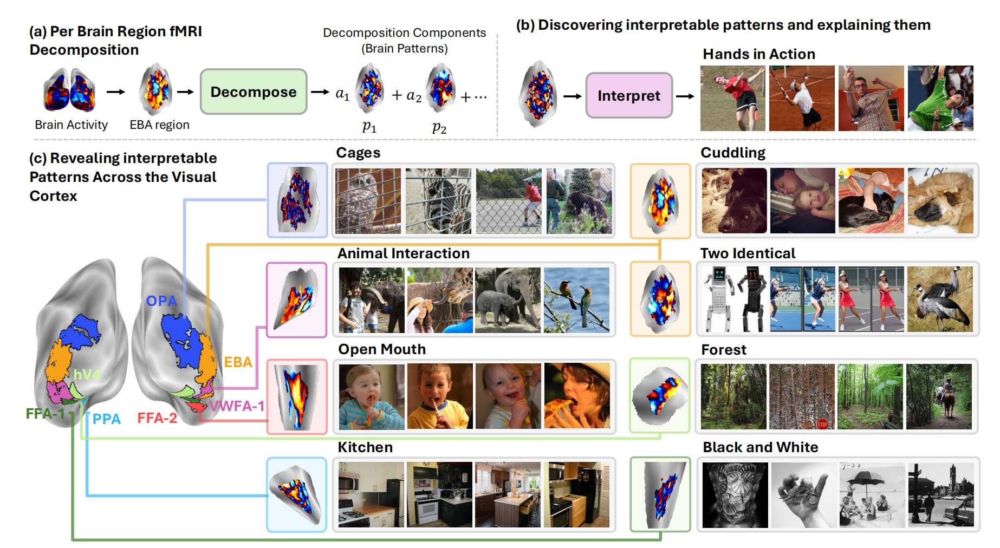
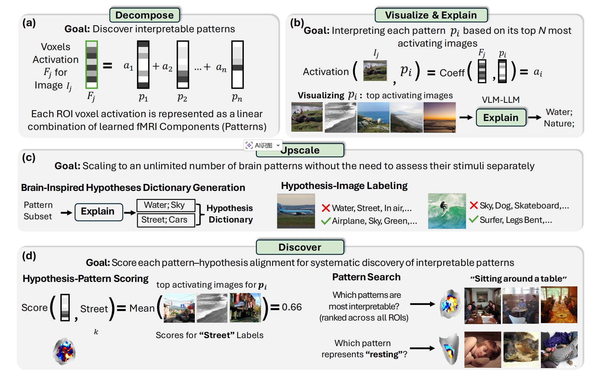
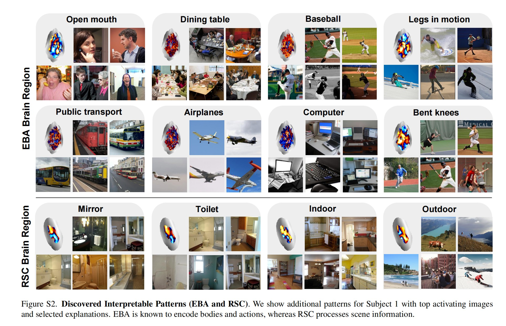

Paper Walkthroughs
BrainExplore: Large-Scale Discovery of Interpretable Visual Representations in the Human Brain
An automated framework that discovers thousands of interpretable visual concepts encoded across the human visual cortex.
Introduction
Understanding how the human brain represents visual concepts has been a fundamental challenge in neuroscience. Where in the brain do we encode "open mouths," "cuddling," or "forests"? For decades, researchers have used functional magnetic resonance imaging (fMRI) to study these representations, but progress has been limited by manual inspection, small-scale analyses, and a focus on specific brain regions or predefined categories.
Enter BrainExplore, a groundbreaking automated framework that discovers and explains visual representations across the entire visual cortex. Instead of manually testing whether a brain region responds to faces versus places, BrainExplore automatically identifies thousands of interpretable patterns and describes them in natural language—from specific sports like "surfing" and "tennis" to nuanced concepts like "bent knees" and "two identical objects."
The key innovation? BrainExplore combines unsupervised decomposition of fMRI activity with modern vision-language models to create an end-to-end pipeline for discovering, validating, and explaining brain representations at unprecedented scale. The result is a comprehensive map of visual concepts encoded across different brain regions, including many fine-grained representations that have never been reported before.

The Challenge: Limited Scale in Brain Interpretability
Traditional fMRI research faces several fundamental bottlenecks:
- Manual inspection doesn't scale: Researchers typically examine only a handful of fMRI patterns by hand, making it impossible to systematically map thousands of potential visual concepts.
- Small datasets: fMRI datasets contain only ~10,000 images per subject due to the cost and time required for brain scanning, while the space of possible visual concepts is vast.
- Region-specific analyses: Most studies focus on specific regions like the fusiform face area (FFA) or parahippocampal place area (PPA), missing representations that may be distributed across multiple areas.
- Category-selective contrasts: Traditional approaches compare responses to predefined categories (faces vs. objects), but this requires researchers to predefine what to look for and use relatively "clean" images dominated by single concepts.
These limitations mean that our understanding of visual representations in the brain remains incomplete. We know about high-level distinctions (faces, places, bodies), but the fine-grained structure of these representations—and how they're organized across the cortex—remains largely unmapped.
The BrainExplore Solution: Automated Discovery at Scale
BrainExplore addresses these challenges through a four-stage automated pipeline:

Stage 1: Per-Region Decomposition
The framework starts by decomposing fMRI activity in each brain region into interpretable component patterns. Think of it like finding the "building blocks" of brain activity—patterns such that any fMRI response can be expressed as a combination of these patterns.
BrainExplore employs multiple decomposition methods:
- Principal Component Analysis (PCA): Finds orthogonal patterns that capture maximum variance
- Non-negative Matrix Factorization (NMF): Discovers additive, non-negative patterns
- Independent Component Analysis (ICA): Identifies statistically independent sources of brain activity
- Sparse Autoencoders (SAE): A novel application to fMRI that learns overcomplete dictionaries with sparsity constraints—inspired by recent work in AI interpretability
Importantly, all decompositions are learned purely from fMRI responses with no image features or labels, ensuring that discovered representations emerge from brain activity rather than being imposed externally.
Stage 2: Visualize & Explain
For each discovered pattern, BrainExplore identifies the images that most strongly activate it. The framework then uses vision-language models to:
- Generate detailed captions for these top-activating images
- Synthesize natural language hypotheses about what these images share
- Propose 5-10 candidate explanations for each pattern (e.g., "open mouths," "surfing," "kitchen scenes")
This stage transforms raw fMRI patterns into interpretable visual concepts, bridging brain activity and human-understandable descriptions.
Stage 3: Upscale with a Brain-Inspired Dictionary
To scale beyond manually explaining each pattern, BrainExplore builds a comprehensive dictionary of visual concepts inspired by brain activity. The framework:
- Selects the most consistent patterns across all decompositions (using CLIP similarity of top-activating images)
- Generates hypotheses for these high-quality patterns
- Merges similar concepts to create a unified dictionary of ~1,300 visual concepts
- Labels every image in the dataset with respect to every concept in the dictionary
This creates a massive hypothesis-image matrix that can be used to evaluate any brain pattern—no need to explain each one individually.
Stage 4: Discover & Score Interpretability
The final stage systematically evaluates which patterns are most interpretable and which concepts they best explain. For each pattern:
- Retrieve its top 0.2% most activating images
- For each hypothesis, calculate what fraction of these images express that concept
- Normalize by global concept frequency (rare concepts get higher scores for the same match rate)
- Assign the best-matching hypothesis and a quantitative alignment score
This scoring enables pattern search ("which patterns are most interpretable?") and hypothesis search ("which pattern best represents 'open mouth'?")—both within specific regions and across the entire brain.
Breakthrough Innovation: Augmentation with Predicted fMRI
One of BrainExplore's most impactful contributions is using predicted fMRI to overcome data scarcity. The framework leverages an image-to-fMRI encoder that synthesizes brain responses for images never actually viewed by subjects.
This augmentation expands the dataset from ~10,000 measured images to over 120,000 total images (measured + predicted), which:
- Improves decomposition quality: More training data enables more stable and robust pattern discovery
- Increases diversity of discovered concepts: A larger image pool means patterns can be explained with more specific, less common visual concepts
- Boosts interpretability dramatically: For ICA, augmentation improves interpretable hypothesis coverage from 0.8% to 18.3%
Crucially, all final interpretations are validated on actual measured fMRI—predicted responses are used only for training and image retrieval, never for evaluation.
Sparse Autoencoders for Brain Decomposition
Perhaps the most novel methodological contribution is applying Sparse Autoencoders (SAEs) to fMRI decomposition. Originally developed for interpreting artificial neural networks, SAEs learn overcomplete representations (more components than input dimensions) while enforcing that each sample uses only a few components.
For brain interpretability, SAEs offer unique advantages:
- More interpretable patterns: SAEs discover significantly more interpretable components than traditional methods (17.4% of concepts explained vs. 7.4% for PCA)
- Complementary representations: SAEs reveal concepts not captured by other methods
- Better spatial localization: Despite receiving only 1D voxel vectors with no spatial information, SAE patterns are notably more spatially clustered than ICA patterns—suggesting they capture functionally coherent neural populations
The framework uses separate encoder networks for measured and predicted fMRI (due to noise differences) while sharing a common decoder, enabling both data types to be decomposed into the same component dictionary.
Fine-Grained Concepts Across the Visual Cortex
BrainExplore reveals thousands of interpretable patterns spanning many distinct visual concepts. Some highlights:

Extrastriate Body Area (EBA)
Known for body processing, BrainExplore uncovers specific sports (surfing, soccer, tennis, frisbee), actions (jumping, tooth brushing), and body-oriented concepts (hands, neckwear, bent knees, open mouths).
Parahippocampal Place Area (PPA)
Beyond the standard indoor/outdoor distinction, the framework finds nuanced scene categories: stone buildings, commercial buildings, kitchens, countertops, landscapes, healthy food presentations, and collages.
Occipital Place Area (OPA)
Captures scene layout and navigability with concepts like clock towers, signboards, vehicles, horizons, toilets, and artificial lighting.
Early Visual Area V4
Encodes mid-level features including black and white images, lighting contrast, airplanes, and specific object categories.
Fusiform Face Area (FFA) and Body-Selective Regions
Show selectivity for smiling, eyes, animals, fabric, legs extended, hands relaxed, and clothes—going well beyond generic face or body selectivity.
Many of these fine-grained representations have never been reported in previous literature, demonstrating the power of automated, large-scale discovery.
Quantitative Evaluation: Measuring Interpretability
BrainExplore introduces rigorous metrics for interpretability:
- Percentage of Interpretable Hypotheses: The fraction of concepts that achieve high alignment (>0.5 or >0.8) with at least one pattern
- Number of Interpretable Patterns: How many distinct patterns have clear, high-scoring explanations (removing near-duplicates)
Key quantitative findings:
- Predicted fMRI is essential: Across all methods, augmentation with predicted responses dramatically improves interpretability. ICA jumps from 0.8% to 18.3% explained concepts.
- SAEs excel: Sparse Autoencoders explain 17.4% of concepts (single model) and discover ~9,000 interpretable patterns at the 0.5 threshold—far more than other methods.
- Method integration wins: Combining SAE and ICA yields the best performance (21.5% of concepts explained), demonstrating that different decompositions capture complementary aspects of brain representations.
- Higher-level regions are more interpretable: Regions encoding semantic information (EBA, PPA, OPA) show greater interpretability than early visual areas (V1-V3)—likely because they encode concepts more naturally described in language.
All evaluations are performed on held-out measured fMRI data not used during interpretation, ensuring results reflect genuine brain representations rather than artifacts of the discovery process.
For more details, check out the paper: BrainExplore on arXiv